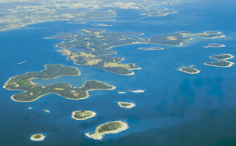
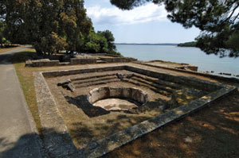

Skupinu otoka u sjevernome dijelu Jadranskoga mora uz zapadnu obalu Istre, koju od istarskoga kopna dijeli Fažanski kanal, nazivamo Brijunski otoci ili Brijuni (tal. Brioni). Hrvatska enciklopedija predstavlja članak o otočju koje se sastoji od 14 otoka: dva veća (Veli Brijun i Mali Brijun) te 12 manjih (Krasnica ili Vanga, Sv. Jerolim, Kozada ili Kotež, Gaz, Vrsar ili Orzera, Galija, Pusti ili Madona, Obljak ili Okrugljak, Grunj ili Grongera, Supin, Supinić i Sv. Marko). Otoci su bogati biljnim i životinjskim svijetom, klima je blaga, a vapnenačko tlo pokriveno je debelim slojem crvenice. Godine 1983. Brijuni su proglašeni nacionalnim parkom.
Vegetaciju čine sredozemne (crnika, lovor i ružmarin) i suptropske (agava, palma) biljke. Tijekom XX. st. na otoke su unesene mnoge životinjske vrste: jeleni, srne, mufloni, zečevi, lavovi, tigrovi, leopardi, pume, pantere, gepardi, medvjedi, indijski slonovi, zebre, ljame, indijska goveda, nojevi, paunovi i fazani. Godine 1978. osnovan je safari-park, a osim njega na Brijunima se nalazi etnopark, mediteranski vrt i zavičajni muzej s paleontološkom, arheološkom i kulturno-povijesnom zbirkom.

Otoci su naseljeni od ranoga brončanog do antičkoga doba, o čemu svjedoče gradinska naselja, tumuli i nekropole. Podni mozaici u Villi rustici iz I. st. remek-djelo su rimske umjetnosti. Mnogi ostatci rimskih hramova i ranokršćanskih crkava svjedoče o kontinuitetu života od IV. do XIV. st. Austrijanci su u XIX. st. izgradili sustav utvrda za obranu grada Pule, a početkom XX. st. izgrađeno je nekoliko zgrada u stilu bečke secesije. Između dvaju svjetskih ratova izgrađeno je nekoliko vila u duhu talijanske moderne arhitekture.
U rimsko su doba na otocima ljetovali bogati građani iz današnje Pule, a nakon Rimljana otocima vladaju Ostrogoti, Bizant, Franci i Mletci. U XI. st. osnovana je benediktinska opatija, no nakon kuge 1312. benediktinci odlaze. Uskoro otoci dolaze pod vlast Venecije. Godine 1893. otoke kupuje austrijski industrijalac Paul Kupelwieser i uređuje ih kao ljetovalište za aristokraciju – gradi hotele, morsko pristanište, kupalište, natkriveni bazen s grijanom morskom vodom, sportske terene za polo, golf i tenis te jahačke i pješačke staze. Tijekom Drugoga svjetskog rata ondje je bilo sjedište talijanske vojno-pomorske akademije i odmorište za posade njemačkih podmornica. Nakon rata mirovnim ugovorom otoci su pripali Jugoslaviji, odnosno Hrvatskoj. Danas služi kao rezidencija Predsjednika Republike Hrvatske.

Brijuni, uvala Verige
Zanima li vas arheologija, prapovijest, tumuli, nekropole, gradine i povijest arheoloških otkrića, Hrvatska enciklopedija na jednome mjestu okuplja vrijedne činjenice o narodima, kulturama i civilizacijama iz davne prošlosti, a Istarska enciklopedija u više od 3000 članaka donosi cjelovit prikaz istarskoga poluotoka od prapovijesti do danas.